Diffraction patterns for discs, disc arrays, and hole arrays in metal screens
In this example, we shine a laser beam (or a plane wave) on an (infinite-area) metal screen perforated by a square-lattice array of circular holes, and produce images of the diffraction patterns as observed on a visualization surface located behind the perforated screen. Here's a schematic depiction of the configuration:
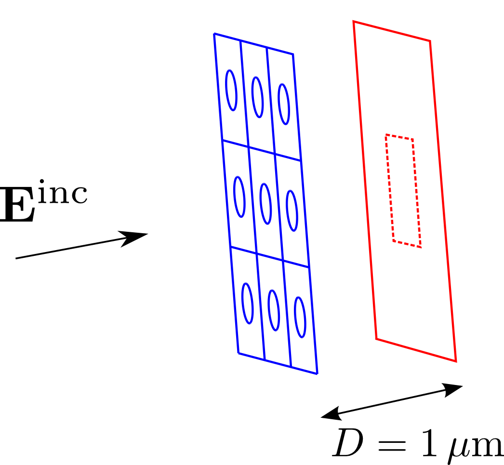
The files for this example may be found in the
share/scuff-em/examples/DiffractionPatterns subdirectory
of your scuff-em installation.
gmsh geometry file and surface mesh for the screen unit cell
The gmsh geometry file HoleyScreenUnitCell.geo
describes an (infinitely thin) square metallic screen,
of dimensions 1μm × 1μm, with a hole of radius 0.25 μm
centered at the center of the square. I produce coarser and
finer surface meshes for this geometry by saying
% gmsh -2 -clscale 1 HoleyScreenUnitCell.geo
% RenameMesh HoleyScreenUnitCell.msh
% gmsh -2 -clscale 0.75 HoleyScreenUnitCell.geo
% RenameMesh HoleyScreenUnitCell.msh
(where RenameMesh is a simple
bash script that uses scuff-analyze to count the number
of interior edges in a surface mesh and rename the mesh file
accordingly.)
This produces the files HoleyScrenUnitCell_1228.msh
and HoleyScreenUnitCell_2318.msh,
which you can visualize by opening in gmsh::
% gmsh HoleyScreenUnitCell_1228.msh
% gmsh HoleyScreenUnitCell_2318.msh
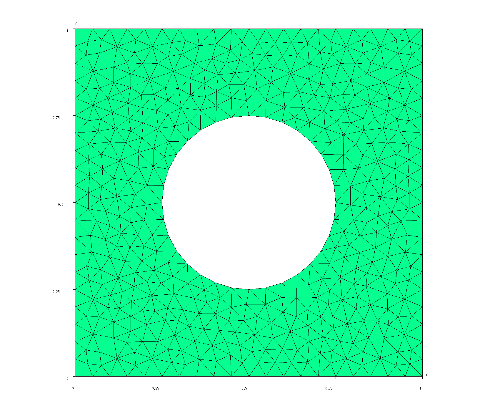
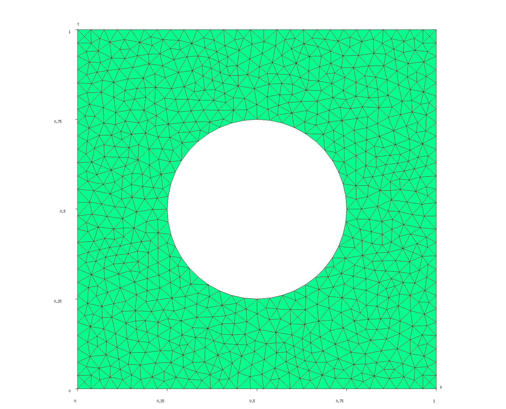
Note that finer meshing resolution is obtained by specifying
the -clscale argument to gmsh (it stands
for "characteristic length scale"), which specifies an overall
scaling factor for all triangle edges.
scuff-em geometry files
The scuff-em geometry files
HoleyScreen_1228.scuffgeo
and
HoleyScreen_2318.scuffgeo
describe infinite square lattices with unit
cells defined by the unit-cell meshes we created
above. The N=1228 guy looks like this:
LATTICE
VECTOR 1 0
VECTOR 0 1
ENDLATTICE
OBJECT HoleyScreen
MESHFILE HoleyScreenUnitCell_1228.msh
ENDOBJECT
Note that we don't have to specify a MATERIAL
for the screen, since PEC is the default.
We can use scuff-analyze to produce an image of what the full geometry looks like, including the lattice repetitions:
% scuff-analyze --geometry HoleyScreen_1228.scuffgeo --WriteGMSHFiles --Neighbors 2
This produces the file HoleyScreen_1228.pp, which you
can view by opening it in gmsh:
% gmsh HoleyScreen_1228.pp
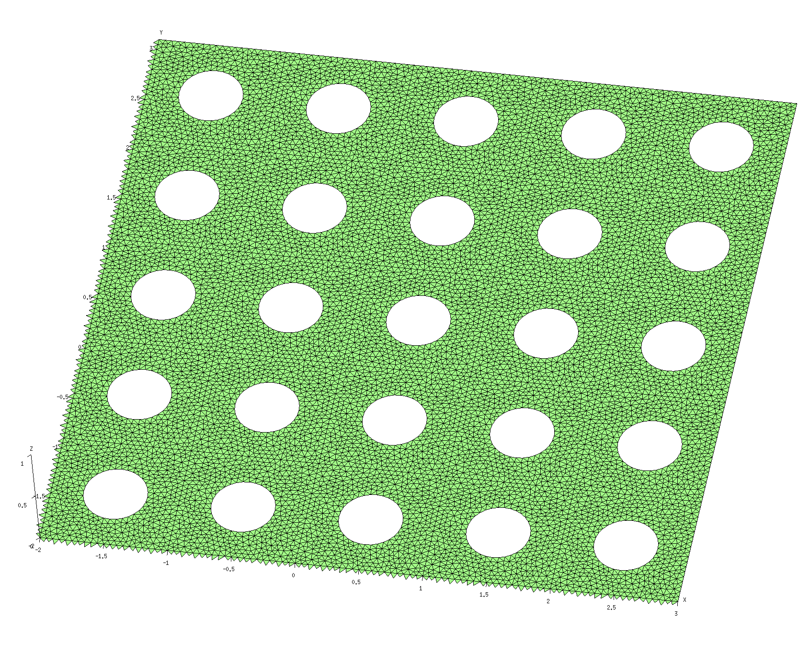
Field visualization mesh
The next step is to create a meshed representation of the
surface on which we will visualize the diffraction patterns.
Here's a gmsh file called
FVMesh.geo that describes a square of
side length 1 micron, parallel to the xy plane and
located at a height of z=1 micron, thus corresponding
to the region enclosed by the dotted line in the schematic
figure above. ("FVMesh" stands for "field-visualization
mesh.") This .geo file contains a user-specifiable
parameter N that sets the number of triangle edges per
unit length in the mesh representation; I would
like to set this number to 50, so I say
% gmsh -2 -setnumber N 50 FVMesh.geo -o FVMesh.msh
% RenameMesh FVMesh.msh
This produces the file FVMesh_7400.msh:
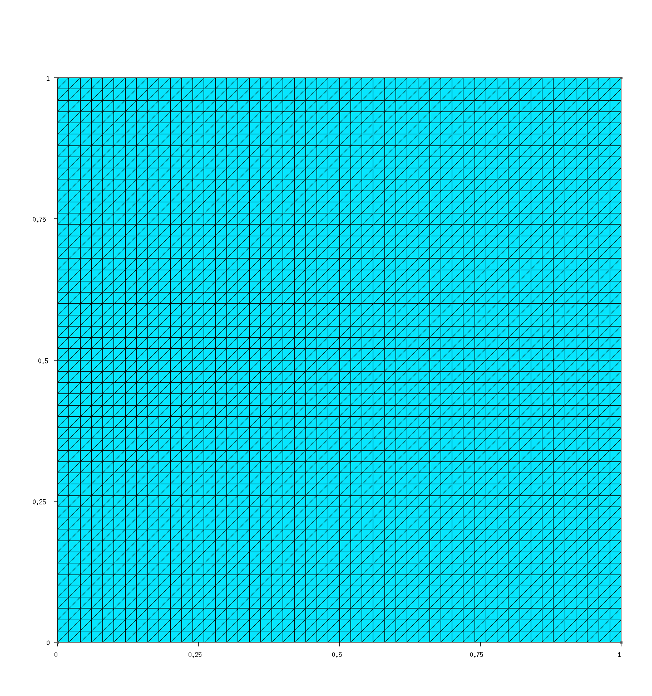
Running scuff-scatter
Now all that's left is to run the calculation.
Put the following content into a little text
file called scuff-scatter.args and pipe it into
the standard input of scuff-scatter:
geometry HoleyScreen_1228.scuffgeo
FVMesh FVMesh_7400.msh
Lambda 0.3751
Lambda 0.2501
Lambda 0.1251
pwDirection 0 0 1
pwPolarization 1 0 0
Note that I have chosen wavelengths of where m is the hole radius. In each case I have shifted the wavelength by a tiny amount away from being commensurate with the lattice period to avoid numerical instabilities associated with Wood anomalies.
% scuff-scatter < scuff-scatter.args
% scuff-scatter --geometry HoleyScreen_2318.scuffgeo < scuff-scatter.args
In the second command line here, the command-line specified
geometry overrides the geometry in the .args file.
This produces the files HoleyScreen_1228.FVMesh_7400.pp
and HoleyScreen_2318.FVMesh_7400.pp, which can be
visualized by opening them in gmsh.
| 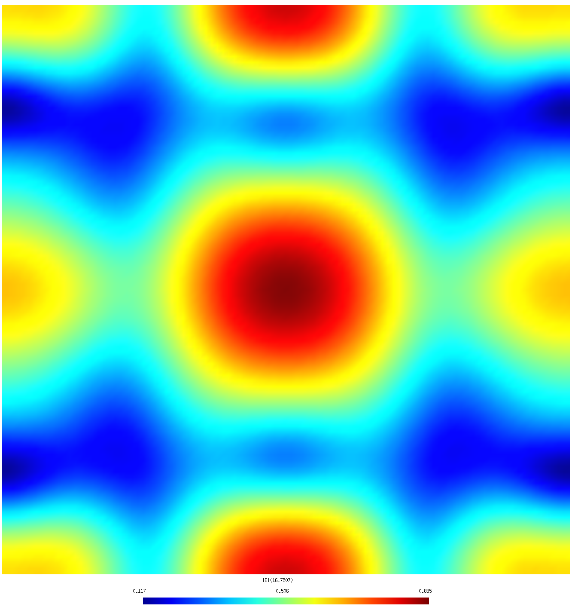 | 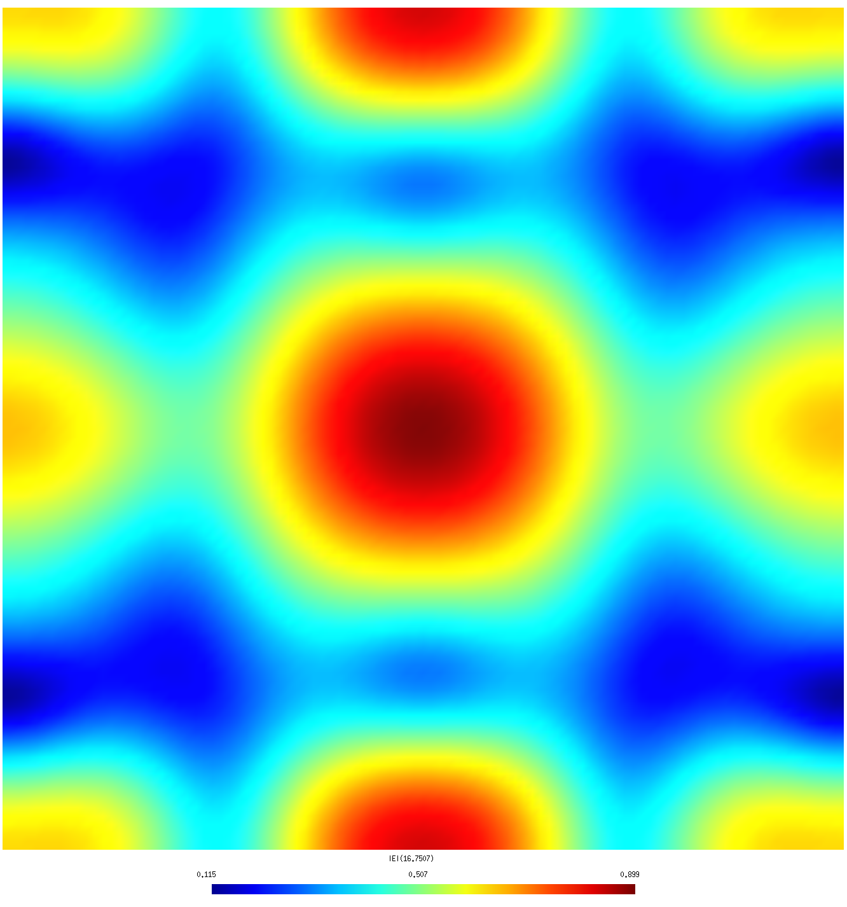 |
| λ=1.5 R (coarse mesh) | λ=1.5 R (fine mesh) |
| 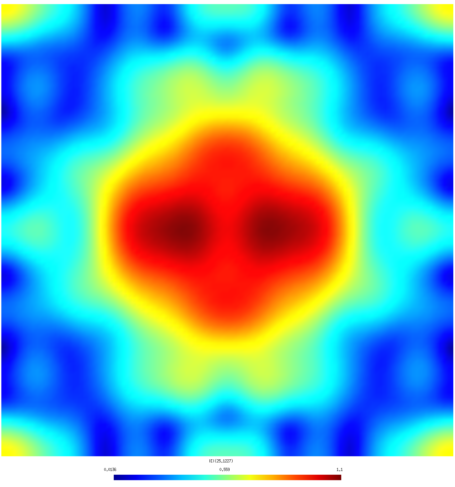 | 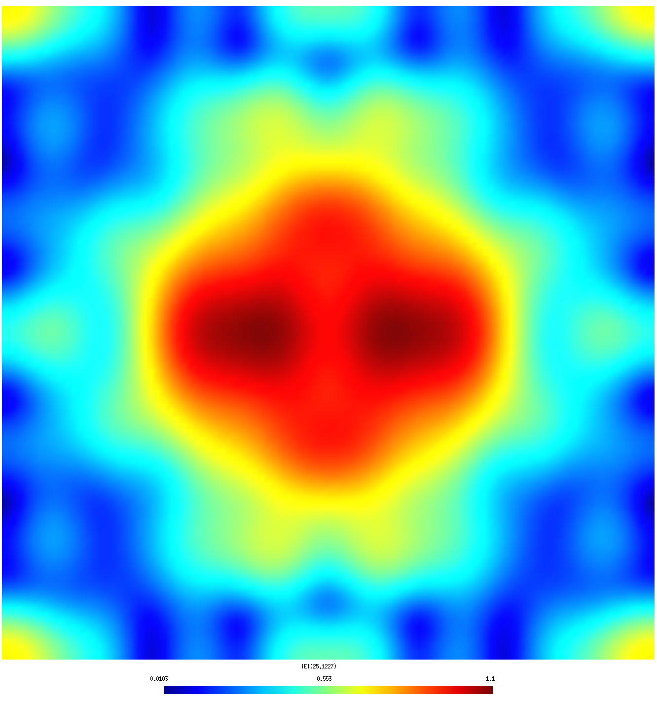 |
| λ=1.0 R (coarse mesh) | λ=1.0 R (fine mesh) |
| 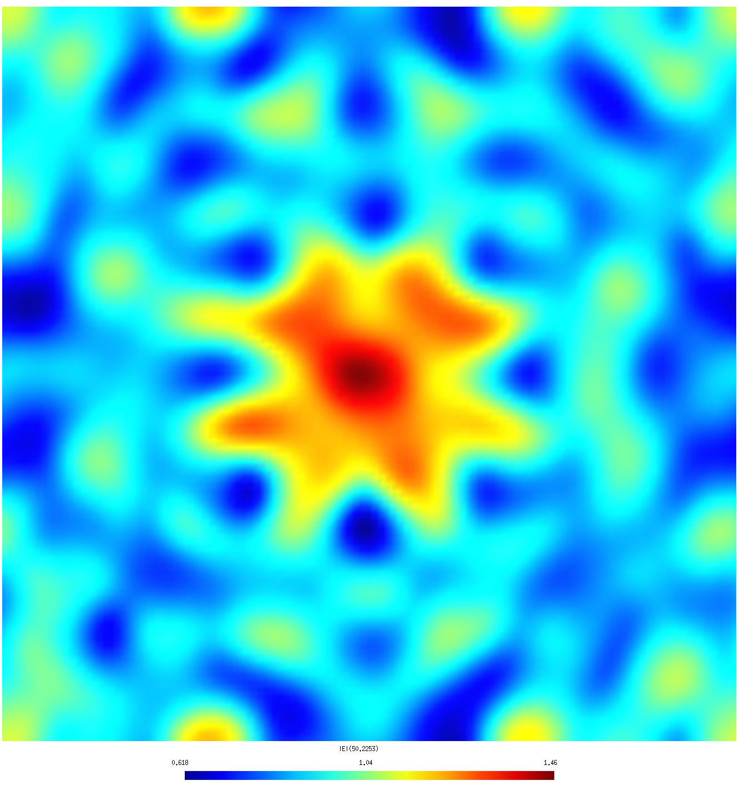 | 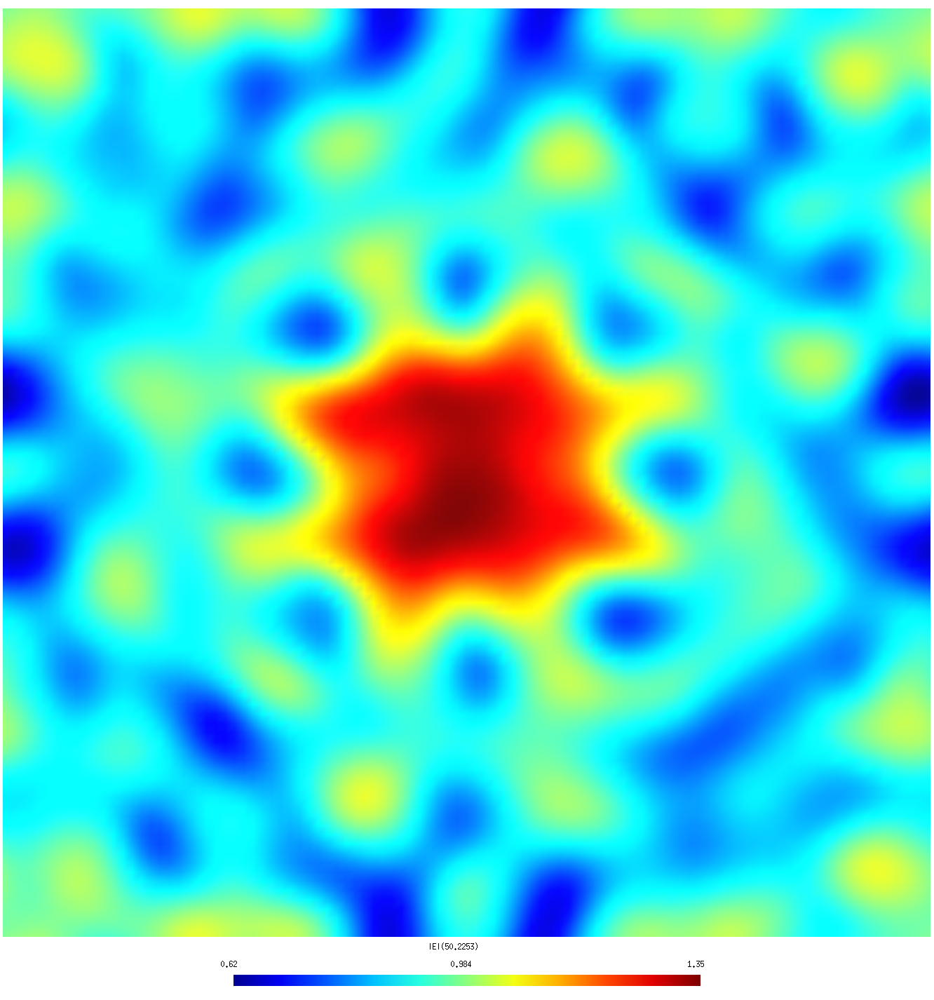 |
| λ=0.5 R (coarse mesh) | λ=0.5 R (fine mesh) |